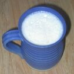

L's îngrédgiens:
 Lé chaûdé est eune bouaisson faite auve du cidre caûd et d's oeux. La r'chette est tout simpliément: du lait caûd et d's oeux d'battus auve lé cidre.
Prannez deux sâsse-paines. Caûffez l'cidre bein caûd (mais i' n'faut pon l'laîssi bouoilli), et en même temps caûffez l'lait jusqu'à ch'qu'i' sait tchiède.
D'battez l's oeux et ajouôtez-les au lait (ayant prîns lé lait dé d'ssus l'feu) et pis vèrsez l'cidre caûd dans l'lait. D'battez bein et vèrsez dans des vèrres ou des mogues.
Nou disait aut'fais qué quand nou-s-a fraid, pour sé rêcaûffer i' n'y'a rein comme eune bollée d'chaûdé.
Viyiz étout: